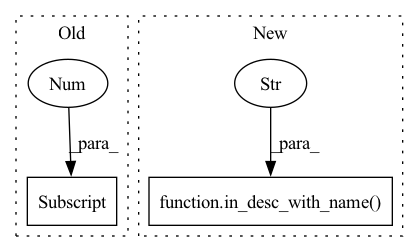

Pattern ID :6948

Before Change
sdfg: SDFG) -> bool:
in_edges = state.in_edges(node)
input0_dim = len(in_edges[0].data.subset.size())
input1_dim = len(in_edges[1].data.subset.size())
if input0_dim == 4 and input1_dim == 4:
return True
After Change
def forward_can_be_applied(node: ONNXOp, state: SDFGState,
sdfg: SDFG) -> bool:
in_edges = state.in_edges(node)
input0_dim = len(in_desc_with_name(node, state, sdfg, "A").shape)
input1_dim = len(in_desc_with_name(node, state, sdfg, "B").shape)
if input0_dim == 4 and input1_dim == 4:
In pattern: SUPERPATTERN
Frequency: 3
Non-data size: 2
Instances
Fragment ID: 23280119
Project Name: spcl/daceml
Commit Name: e3c8319234500f1d324c02bf80cc7383ea1a74ef
Time: 2020-11-25
Author: oliverrausch99@gmail.com
File Name: daceml/onnx/op_implementations/pure_implementations.py
M Class Name: PureMatMul
N Class Name: PureMatMul
M Method Name: forward_can_be_applied(3)
N Method Name: forward_can_be_applied(3)
M Parent Class: ONNXForward
N Parent Class: ONNXForward
M File Name: daceml/onnx/op_implementations/pure_implementations.py
N File Name: daceml/onnx/op_implementations/pure_implementations.py
M Start Line: 233
M End Line: 235
N Start Line: 234
N End Line: 235
'>
Before Change
ctype = copy.deepcopy(sdfg.arrays[out_edges[0].data.data])
input0_dim = len(in_edges[0].data.subset.size())
input1_dim = len(in_edges[1].data.subset.size())
if input0_dim == 4 and input1_dim == 4:
@dace.program
After Change
ctype = copy.deepcopy(sdfg.arrays[out_edges[0].data.data])
input0_dim = len(in_desc_with_name(node, state, sdfg, "A").shape)
input1_dim = len(in_desc_with_name(node, state, sdfg, "B").shape)
if input0_dim == 4 and input1_dim == 4:
'>
Fragment ID: 23280118
Project Name: spcl/daceml
Commit Name: e3c8319234500f1d324c02bf80cc7383ea1a74ef
Time: 2020-11-25
Author: oliverrausch99@gmail.com
File Name: daceml/onnx/op_implementations/pure_implementations.py
M Class Name: PureMatMul
N Class Name: PureMatMul
M Method Name: forward(3)
N Method Name: forward(3)
M Parent Class: ONNXForward
N Parent Class: ONNXForward
M File Name: daceml/onnx/op_implementations/pure_implementations.py
N File Name: daceml/onnx/op_implementations/pure_implementations.py
M Start Line: 253
M End Line: 268
N Start Line: 267
N End Line: 268
'>
Before Change
sdfg: SDFG) -> bool:
in_edges = state.in_edges(node)
input_dim = len(in_edges[0].data.subset.size())
if input_dim == 2:
return True
After Change
@staticmethod
def forward_can_be_applied(node: ONNXOp, state: SDFGState,
sdfg: SDFG) -> bool:
return in_desc_with_name(node, state, sdfg, "X").dtype in [
dace.float16, dace.float32, dace.float64
]
'>
Fragment ID: 23280122
Project Name: spcl/daceml
Commit Name: 2911aae414c4a2202fbf6d8cf65014b1e20d30c9
Time: 2020-12-02
Author: oliverrausch99@gmail.com
File Name: daceml/onnx/op_implementations/pure_implementations.py
M Class Name: PureTanh
N Class Name: PureTanh
M Method Name: forward_can_be_applied(3)
N Method Name: forward_can_be_applied(3)
M Parent Class: ONNXForward
N Parent Class: ONNXForward
M File Name: daceml/onnx/op_implementations/pure_implementations.py
N File Name: daceml/onnx/op_implementations/pure_implementations.py
M Start Line: 350
M End Line: 355
N Start Line: 349
N End Line: 351